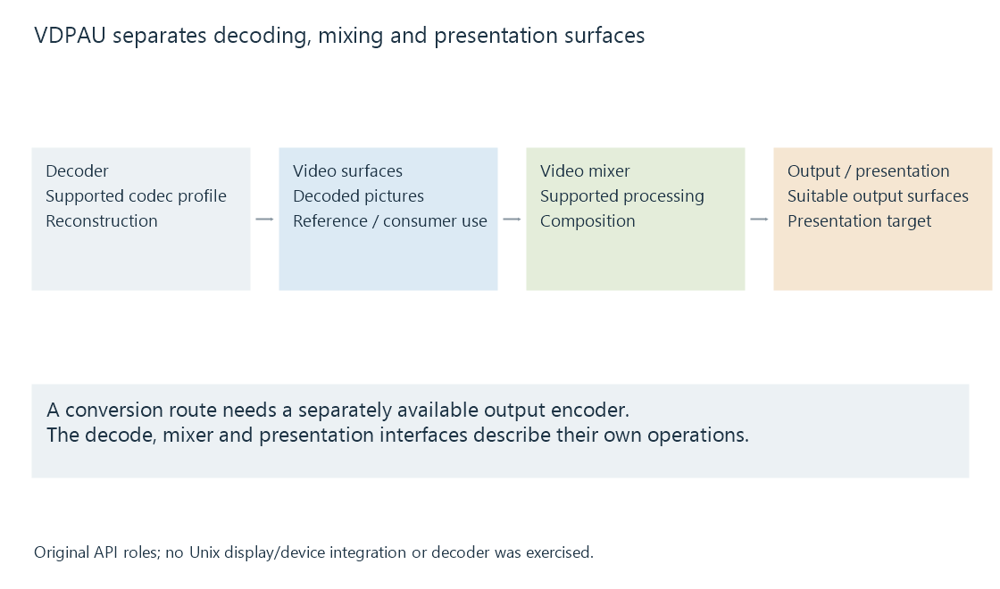

Video Decode and Presentation API for Unix (VDPAU)
VDPAU provides Unix video decoding, mixing and presentation interfaces with defined surface types and driver-backed capability relationships.
VDPAU stands for Video Decode and Presentation API for Unix. It gives media applications interfaces for supported decoding, picture mixing and presentation through an appropriate implementation.
The API name describes an application/driver contract rather than an encoded-video format.
The interface separates surface roles

| API role | Relationship |
|---|---|
| Decoder | Selected compressed configuration to video surfaces |
| Video mixer | Process/combine supported picture information |
| Output surface | A representation suitable for the relevant output operations |
| Presentation queue/target | Arrange supported output presentation |
The decoder needs actual profile support. The mixer and surface configuration have their own supported properties.
The driver implementation connects these objects to the device. A documented function name does not imply that every implementation supplies every feature.
Mixing is another picture-processing stage
A video mixer can perform supported processing and composition on suitable surfaces. Deinterlacing and other operations require their own capability and configuration.
The output picture is therefore the result of both reconstruction and the selected later operations. A visible difference should not automatically be attributed to the decoder if mixer configuration changed too.
This is the same stage separation developed in the hardware pipeline, applied to VDPAU's object model.
Decode support answers a different question from encoding
VDPAU's decode/mixing/presentation interfaces are not a generic output-encoding API. A conversion job needs a separately available encoder and a compatible way to supply it with prepared pictures.
A supported VDPAU decoder can consequently participate in a larger route without identifying the entire conversion stack.
Device and display integration define the environment
An application establishes the relevant VDPAU device and presentation arrangement through its supported platform integration. The resources and capabilities belong to that context.
For an Emby-related Unix discussion, identify whether the actual app/route uses VDPAU, VA-API, NVDECODE or another interface. Similar underlying hardware can be exposed through different software contracts.
See Also
- Video Acceleration API (VA-API)
- NVIDIA NVDEC
- Hardware decoding and software decoding
- How media APIs connect applications to hardware
- Native media players and their playback engines